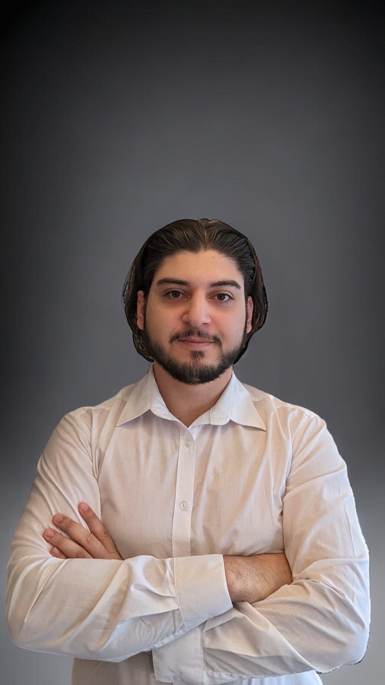

Als IHK-zertifizierter Fachinformatiker für Anwendungsentwicklung bringe ich solide
Kenntnisse in C#, Windows Forms und im .NET Framework mit.
Nach erfolgreichem Abschluss meiner Ausbildung am 08.01.2024 habe ich mich im Bereich der Frontend-Webentwicklulng weitergebildet.
Hierbei eignete ich mir grundlegende Fähigkeiten in HTML, CSS, JavaScript und jQuery an.
Auf meinem GitHub-Profil können Sie meine Fortschritte nachverfolgen.
Als motivierter Junior Entwickler suche ich nach neuen Herausforderungen und freue mich darauf, gemeinsam an spannenden Projekten zu arbeiten.

Geboren und aufgewachsen in der Nähe von Bonn im Jahr 1993, besuchte ich nach der Grundschule die Hauptschule.
Nach meinem Abschluss war für mich klar, dass ich mindestens die Fachoberschulreife erreichen möchte.
Gesagt, getan: Ich besuchte das Berufskolleg in Siegburg
und erlangte als Stufenbester meine Fachoberschulreife mit Qualifikation (FORQ). Nach meiner schulischen
Ausbildung begann ich eine Ausbildung zum Technischen Produktdesigner (früher Technischer Zeichner), die ich
erfolgreich abschloss. Ich arbeitete im Ausbildungsunternehmen als Festangestellter weiter, bis zur
Standortschließung.
Nach der Standortschließung startete ich in einem anderen Unternehmen als Konstrukteur, verantwortlich für die Planung, 3D-Modellierung und Zeichnungen für die Konstruktionen.
Gleichzeitig begann ich eine Weiterbildung zum Techniker im Bereich Maschinenbau . Aufgrund von Corona im Jahr 2020 verlor ich leider meine Anstellung und suchte ein Jahr lang vergebens nach einer neuen Stelle, da Unternehmen in der Krisensituation ihre eigenen Mitarbeiter kaum halten konnten.
Aus diesem Grund entschied ich mich im Jahr 2021, eine Ausbildung zum Fachinformatiker für Anwendungsentwicklung zu beginnen, die ich am 08.01.2024 erfolgreich abgeschlossen habe..
Zu meinen Hobbys zählen:
Hier gelangen Sie zu meiner Wetter App die ich mithilfe von Visual Studio, C# und WPF (Windows Presentation Foundation) erstellt habe. Für die Wetter Daten wurde die API von OpenWetherMap genutzt
BesuchenEiner meiner ersten eigenen Web-Projekte. Mit dieser Responsiven Webseite können Sie an jedem Endgerät Ihre ToDos erstellen und bearbeiten
BesuchenHier sehen Sie mein Lernfortschritt im Bereich der Webentwicklung. Hierbei wurden HTML5, CSS3, JavaScript und das Framework jQuery genutzt
Besuchen